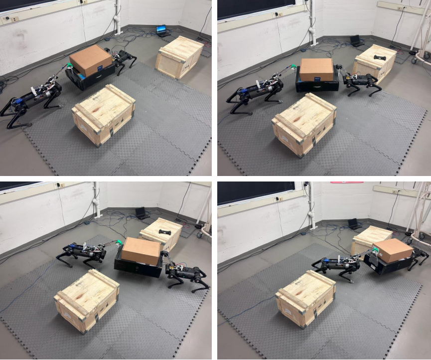
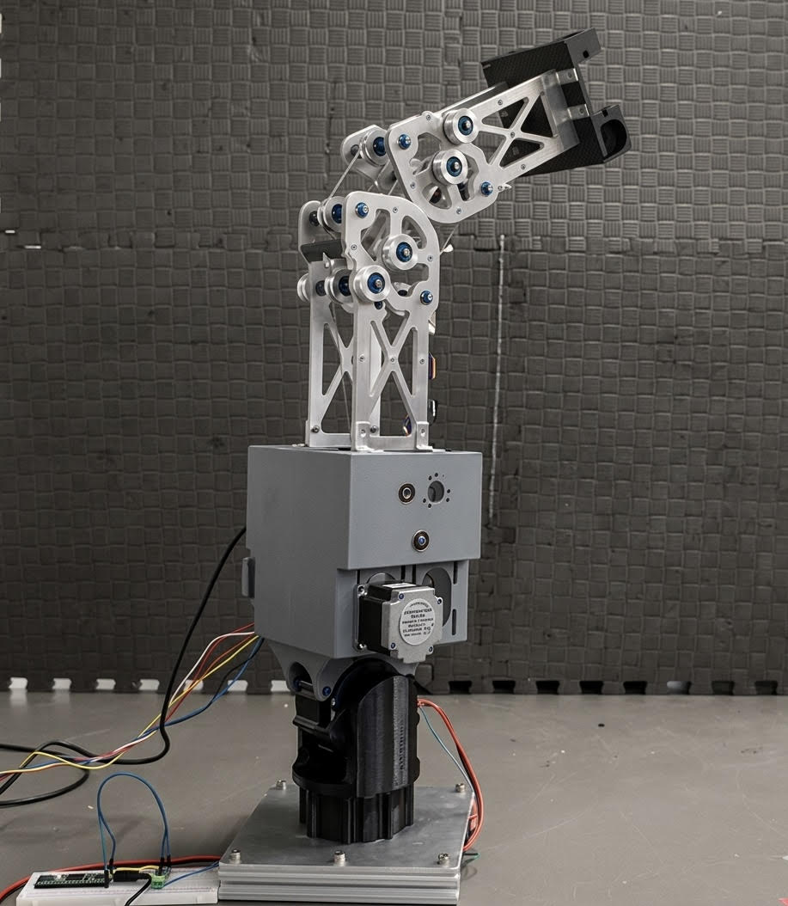
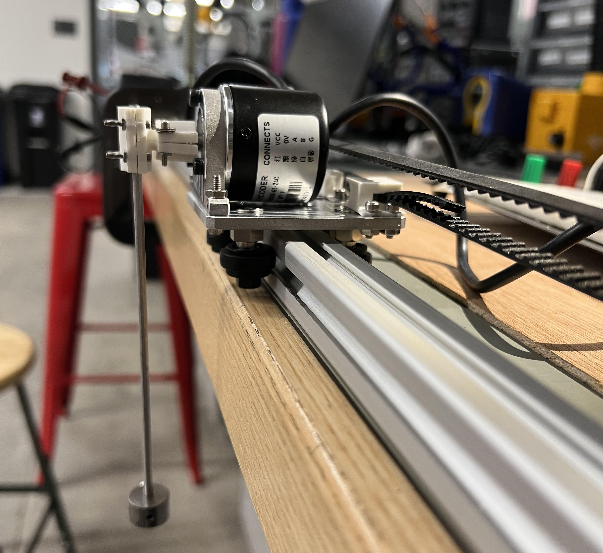
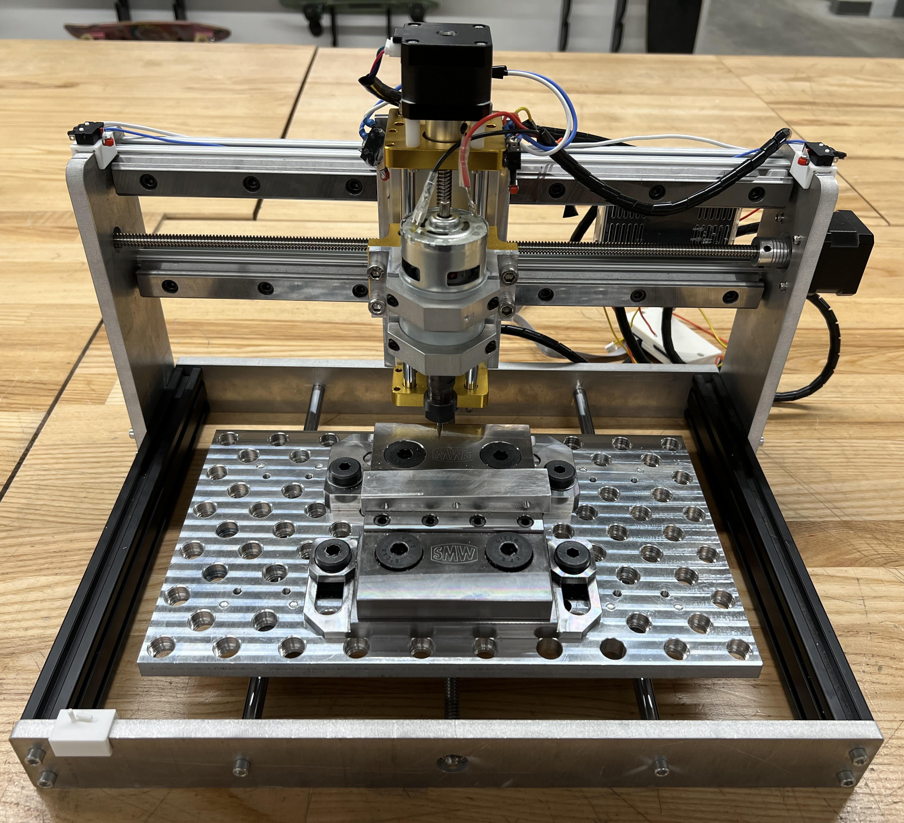
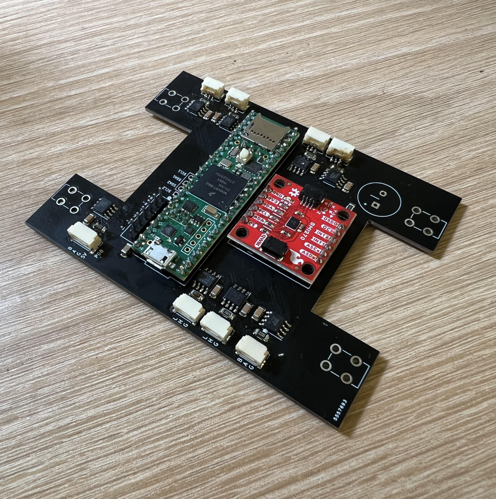

Nathan Chun
PhD student at the Laboratory for Autonomous
Systems in Exploration and Robotics (LASER) advised by Dr. Keenan Albee.
Currently interested in adaptive, hybrid control and manipulation for free-flyers.
nchun at usc dot edu

2026
Started my PhD at USC LASER Lab2026
Started my internship at the NASA JPL-358P Multi-Agent Robotics Group
Hierarchical Control Framework for Collision-Free Collaborative Loco-manipulation of Large and Heavy Objects
Alberto Rigo, Junchao Ma, Nathan Chun, Quan Nguyen, S.K. Gupta
2025 IEEE 21st International Conference on Automation Science and Engineering (CASE) 2025
PDF

Hardware and Control Optimization for Cable-Driven Robots
2025
Senior design project aiming to extend the operational life of cable-driven systems.
*Bleeker Award for Superb Craftsmanship*
Tech Stack: Embedded Systems, 3D Printing, CNC Mill, Lathe, RL
Poster

LQR for Cart-Pole Pendulum
2025
Personal project to simulate, design, and control a cart-pole system with classical LQR control.
Tech Stack: Optimal Control, Embedded Systems, MATLAB, 3D Printing, CNC Mill, Lathe

Custom CNC router
2025
Personal project to design, machine, and assemble a desktop router capable of machining Aluminum.
Tech Stack: Waterjet, CNC Mill, Embedded Systems

HECTOR Low-level Control Board
2024
Design and assembly of control board for DRCL/Laser Robotics' HECTOR humanoid.
Responsible for communication between on-board computer, motors, and sensors.
Tech Stack: PCB Design

Wheelchair Stabilizer
2023
Modular, motorized wheel that actuates based on IMU and load cell feedback to stabilize wheelchairs and prevent injury.
Tech Stack: MATLAB, Embedded Systems